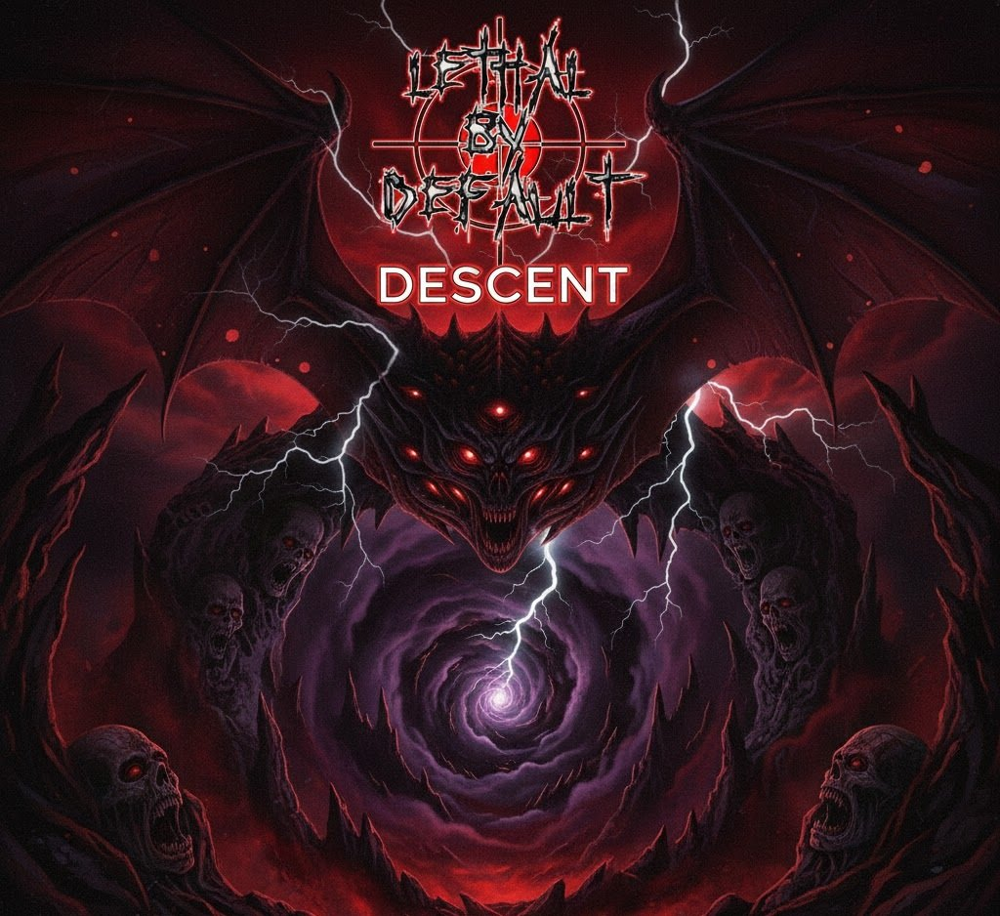

Home
Albums
Videos
Photos
Articles
Home
/
Albums
/
Lethal By Default Albums
/
Descent EP
Descent EP

Descent EP
Select a track to play
01. Die Young
02. Lost Souls
03. Puppy Love
04. Decadence
05. War of Lies
Remastered Version
Select a track to play
01. Die Young (Remaster)
02. Lost Souls (Remaster)
03. Puppy Love (Remaster)
04. Decadence (Remaster)
05. War of Lies (Remaster)